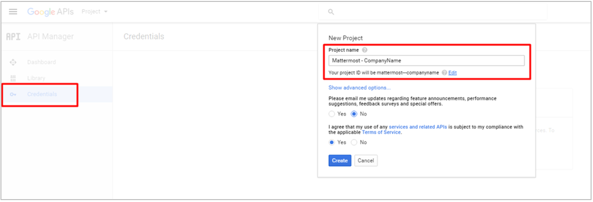
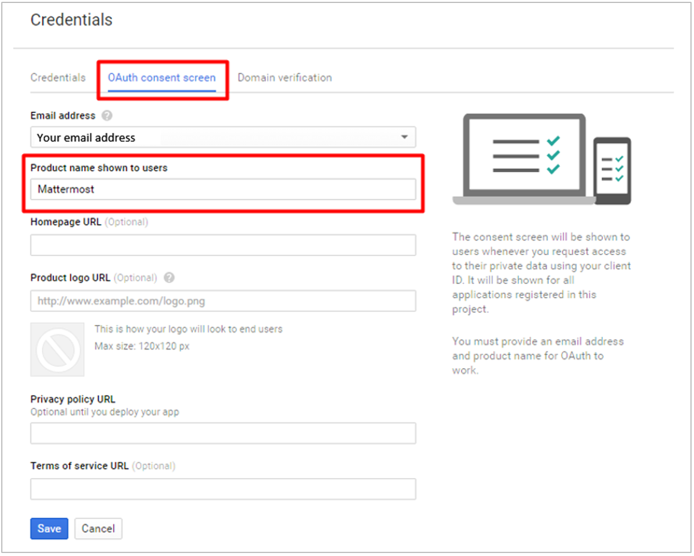
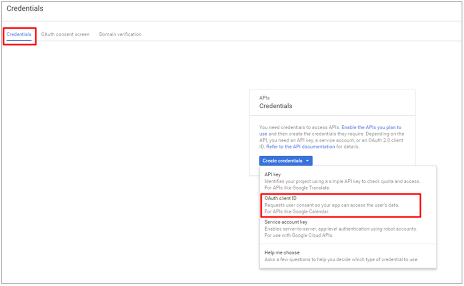
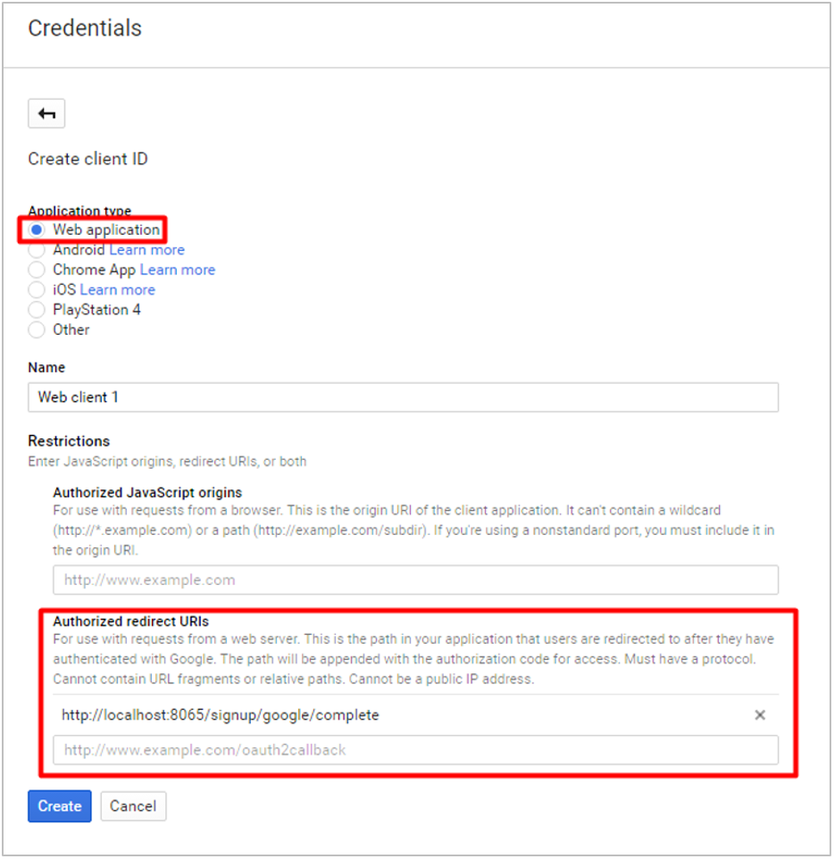
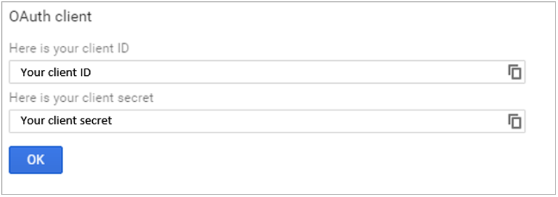

Google Single-Sign-On (E20)¶
Follow these steps to configure Mattermost to use Google as a single-sign-on (SSO) service for team creation, account creation and sign-in.
1 - Log in to your Google account.
2 - Go to Google API Manager, click Credentials in the left hand sidebar, click Create a project and enter “Mattermost - your-company-name” as the Project Name, then click Create.

3 - Click the OAuth consent screen header and enter “Mattermost” as the Product name shown to users, then click Save.

4 - Under the Credentials header, click Create credentials, choose OAuth client ID from the drop-down list.

5 - Select Web Application as the Application type, and choose a descriptive Name for the OAuth connection.
Under Restrictions > Authorized redirect URIs, enter your-mattermost-url/signup/google/complete (example: http://localhost:8065/signup/google/complete). Click Create.

6 - Copy the Client ID and Client Secret, which will be used to configure Google SSO for Mattermost.

7 - Finally, go to Google+ API and click Enable in the header. This might take a few minutes to propagate through Google’s systems.
8 - In System Console > OAuth 2.0 > Select OAuth 2.0 service provider, choose Google Apps as the service provider and enter Client ID and Client Secret from step 6 in their respective fields.
9 - Restart your Mattermost server to see the changes take effect.
Notes:
- You may also enter Client ID and Client Secret fields from step 6 directly in
GoogleSettingssection ofconfig/config.json. - The following default values in
GoogleSettingssection ofconfig/config.jsonare recommended:Scope:profile emailAuthEndpoint:https://accounts.google.com/o/oauth2/v2/authTokenEndpoint:https://www.googleapis.com/oauth2/v4/tokenUserApiEndpoint:https://www.googleapis.com/plus/v1/people/me